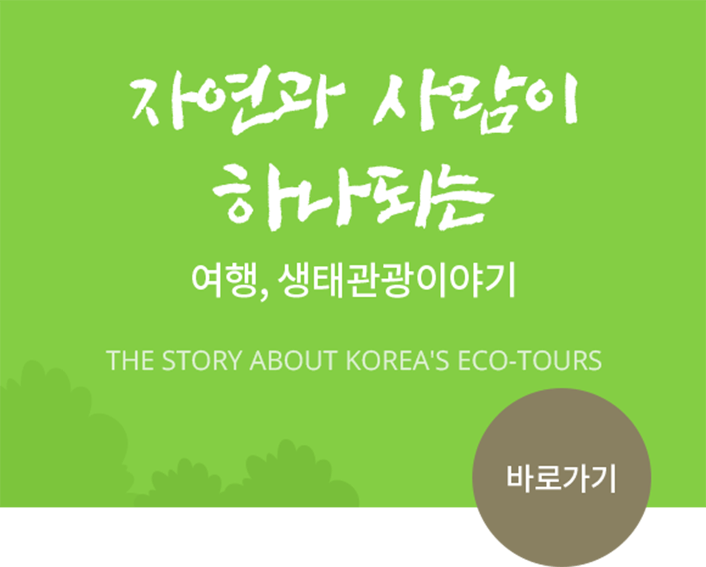

메뉴 바로가기
본문 바로가기
교육안내
자연환경해설사 양성교육
자연환경해설사란?
생태 우수지역을 찾는 탐방객을 대상으로
생태해설·교육·생태탐방 안내를 하는 전문해설사로
자연환경해설사
양성기관에서 교육과정을 이수한 사람
교육과정
구분
기본양성과정
교육대상
자연환경해설사 관심자
교육과목
15과목
교육시간
80시간
교육수료 조건 : 출석률 80%이상, 필기시험 60점 이상, 해설시연 70점 이상
고양시 자연환경해설사 기본양성과정 교육개요
ㆍ교육시간 : 80시간
ㆍ교육비 : 유료
ㆍ교육인원 : 30명 내외
고양시 자연환경해설사 기본양성과정 교육개요
ㆍ2014년 ~ 2021년 수료자 269명
자연환경해설사 양성기관

자연과 사람이 하나되는
여행, 생태관광이야기
THE STORY ABOUT KOREA'S ECO-TOURS
바로가기
바로가기
관련법령
[자연환경보전법] 시행 규칙 제41조의2
(자연환경해설사 교육과정)
1. 법 제59조 제1항에 따라 자연환경해설사가 되려는 자는 제2항에 따른 교육과정 중 기본양성과정 또는 간이양성과정을 이수하여야 한다.
2. 법 제59조 제1항에 따른 교육과정은 별표 2의 2와 같다.
3. 제1항 및 제2항에서 규정한 사항 외에 자연환경해설사 교육과정의 세부적인 사항은 환경부 장관이 정하여 고시한다.